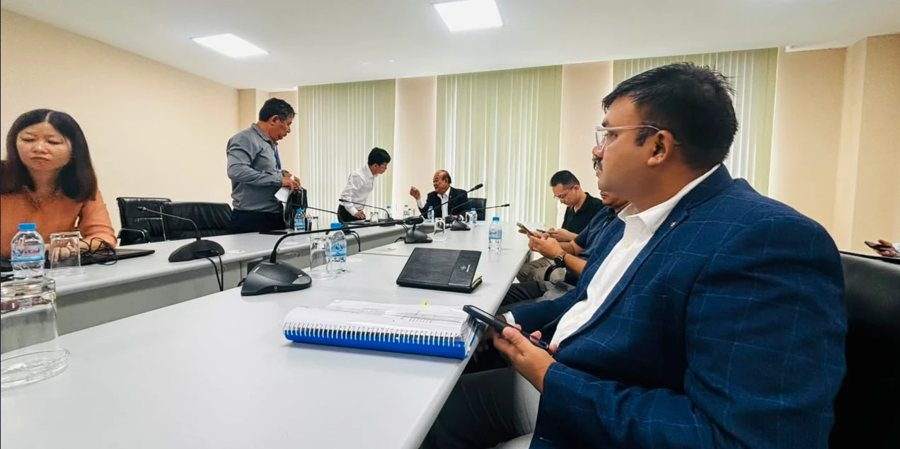

1Business Development
Opening doors to projects in India and overseas.
- Identifying and tracking tender and project opportunities in India and abroad
- Bid / no-bid assessment and win strategy
- Tender and bid management, with technical documentation
- Liaison with government departments, agencies and project partners
- Project analysis and costing to support bid decisions
- Vendor and partner tie-ups for joint bids